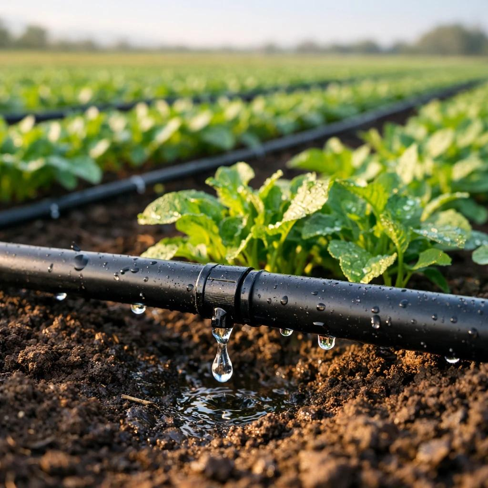

Simple Technology
How It Works
Sensors collect data, IoT devices transmit it, and the system automatically manages irrigation.

1
Soil Sensors
Measure moisture and temperature near plant roots.

2
IoT Device
Transmit sensor readings wirelessly to the system.

3
Smart Irrigation
Open valves and deliver water when required.

4
Data & Insights
Track performance through a digital dashboard.